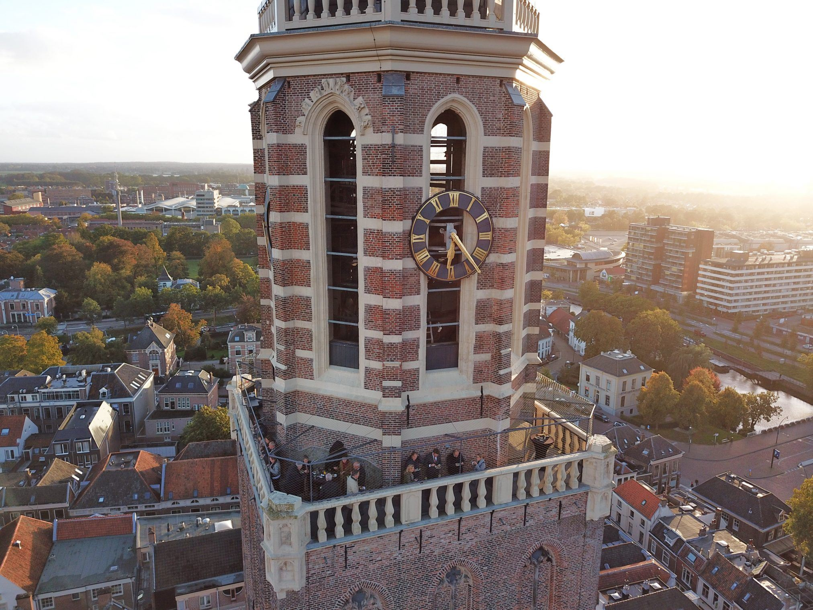

 De toren is geopend op de maandagen, dinsdagen en zaterdagen. je kan dan met een gids naar boven om te gaan kijken naar Zwolle. als je dit doet duurt dit ongeveer 30 minuten. kortom een leuk uitje.Verder is het een vergadermogelijkheid, ja kan dit dan afhuren voor ongeveer 100 euro. Als je eenmaal boven bent is het goed mogelijk dat er een harde wind staat,dus is het handig om daar aan te denken. verdere leuke uitjes als je een dag naar de peperbus gaat zijn verschillende pleinen in Zwolle, en met een beetje geluk de markt. de Peperbus heet de peperbus omdat er vroeger heel veel peper in werd opgeslagen. het is ook mogelijk om bij het bezoek te kijken naar een leuke plek om heen te gaan. alvast veel plezier. Lees hier meer